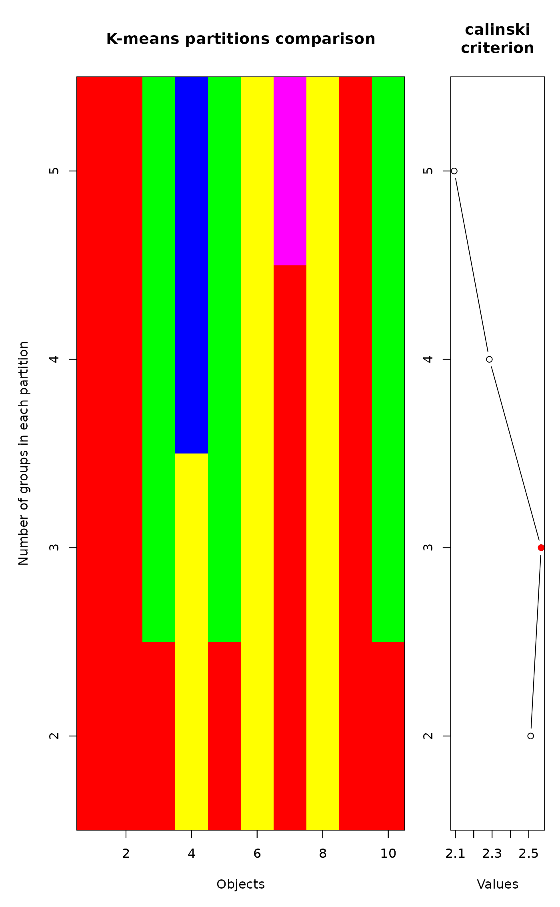
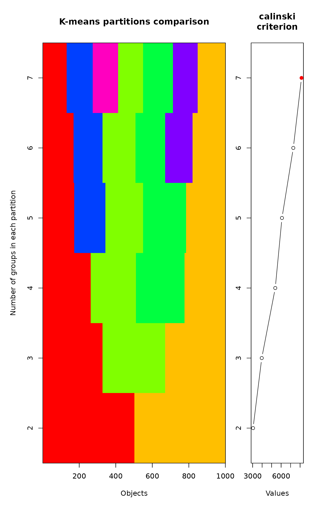
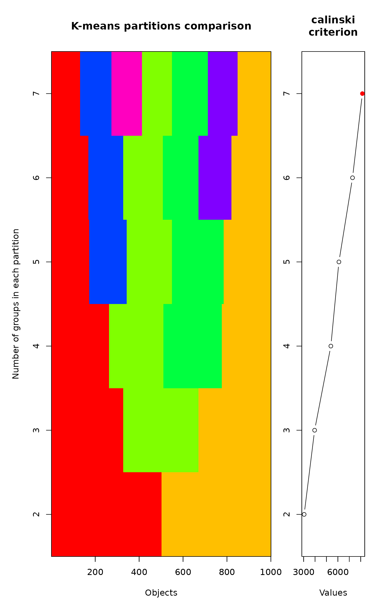

K-means partitioning using a range of values of K
cascadeKM.RdThis function is a wrapper for the kmeans function. It creates
several partitions forming a cascade from a small to a large number of
groups.
Arguments
- data
The data matrix. The objects (samples) are the rows.
- inf.gr
The number of groups for the partition with the smallest number of groups of the cascade (min).
- sup.gr
The number of groups for the partition with the largest number of groups of the cascade (max).
- iter
The number of random starting configurations for each value of \(K\).
- criterion
The criterion that will be used to select the best partition. The default value is
"calinski", which refers to the Calinski-Harabasz (1974) criterion. The simple structure index ("ssi") is also available. Other indices are available in package cclust. In our experience, the two indices that work best and are most likely to return their maximum value at or near the optimal number of clusters are"calinski"and"ssi".- y
Object of class
"kmeans"returned by a clustering algorithm such askmeans- x
Data matrix where columns correspond to variables and rows to observations, or the plotting object in
plot- index
The available indices are:
"calinski"and"ssi". Type"all"to obtain both indices. Abbreviations of these names are also accepted.- min.g, max.g
The minimum and maximum numbers of groups to be displayed.
- grpmts.plot
Show the plot (
TRUEorFALSE).- sortg
Sort the objects as a function of their group membership to produce a more easily interpretable graph. See Details. The original object names are kept; they are used as labels in the output table
x, although not in the graph. If there were no row names, sequential row numbers are used to keep track of the original order of the objects.- gridcol
The colour of the grid lines in the plots.
NA, which is the default value, removes the grid lines.- ...
Other parameters to the functions (ignored).
- parallel
Number of parallel processes or a predefined socket cluster. With
parallel = 1uses ordinary, non-parallel processing. The parallel processing is done with parallel package.
Details
The function creates several partitions forming a cascade from a small
to a large number of groups formed by kmeans. Most
of the work is performed by function cIndex which is based on the
clustIndex in package cclust).
Some of the criteria were removed from this version because computation
errors were generated when only one object was found in a group.
The default value is "calinski", which refers to the well-known
Calinski-Harabasz (1974) criterion. The other available index is the
simple structure index "ssi" (Dolnicar et al. 1999).
In the case of groups of equal
sizes, "calinski" is generally a good criterion to indicate the
correct number of groups. Users should not take its indications
literally when the groups are not equal in size. Type "all" to
obtain both indices. The indices are defined as:
- calinski:
\((SSB/(K-1))/(SSW/(n-K))\), where \(n\) is the number of data points and \(K\) is the number of clusters. \(SSW\) is the sum of squares within the clusters while \(SSB\) is the sum of squares among the clusters. This index is simply an \(F\) (ANOVA) statistic.
- ssi:
the “Simple Structure Index” multiplicatively combines several elements which influence the interpretability of a partitioning solution. The best partition is indicated by the highest SSI value.
In a simulation study, Milligan and Cooper (1985) found
that the Calinski-Harabasz criterion recovered the correct number of
groups the most often. We recommend this criterion because, if the
groups are of equal sizes, the maximum value of "calinski"
usually indicates the correct number of groups. Another available
index is the simple structure index "ssi". Users should not
take the indications of these indices literally when the groups are
not equal in size and explore the groups corresponding to other values
of \(K\).
Function cascadeKM has a plot method. Two plots are
produced. The graph on the left has the objects in
abscissa and the number of groups in ordinate. The groups are
represented by colours. The graph on the right shows the values of the
criterion ("calinski" or "ssi") for determining the best
partition. The highest value of the criterion is marked in red. Points
marked in orange, if any, indicate partitions producing an increase in
the criterion value as the number of groups increases; they may
represent other interesting partitions.
If sortg=TRUE, the objects are reordered by the following
procedure: (1) a simple matching distance matrix is computed among the
objects, based on the table of K-means assignments to groups, from
\(K\) = min.g to \(K\) = max.g. (2) A principal
coordinate analysis (PCoA, Gower 1966) is computed on the centred
distance matrix. (3) The first principal coordinate is used as the new
order of the objects in the graph. A simplified algorithm is used to
compute the first principal coordinate only, using the iterative
algorithm described in Legendre & Legendre (2012). The
full distance matrix among objects is never computed; this avoids
the problem of storing it when the number of objects is
large. Distance values are computed as they are needed by the
algorithm.
Value
Function cascadeKM returns an object of class
cascadeKM with items:
- partition
Table with the partitions found for different numbers of groups \(K\), from \(K\) =
inf.grto \(K\) =sup.gr.- results
Values of the criterion to select the best partition.
- criterion
The name of the criterion used.
- size
The number of objects found in each group, for all partitions (columns).
Function cIndex returns a vector with the index values. The
maximum value of these indices is supposed to indicate the best
partition. These indices work best with groups of equal sizes. When
the groups are not of equal sizes, one should not put too much faith
in the maximum of these indices, and also explore the groups
corresponding to other values of \(K\).
References
Calinski, T. and J. Harabasz. 1974. A dendrite method for cluster analysis. Commun. Stat. 3: 1–27.
Dolnicar, S., K. Grabler and J. A. Mazanec. 1999. A tale of three cities: perceptual charting for analyzing destination images. Pp. 39-62 in: Woodside, A. et al. [eds.] Consumer psychology of tourism, hospitality and leisure. CAB International, New York.
Gower, J. C. 1966. Some distance properties of latent root and vector methods used in multivariate analysis. Biometrika 53: 325–338.
Legendre, P. & L. Legendre. 2012. Numerical ecology, 3rd English edition. Elsevier Science BV, Amsterdam.
Milligan, G. W. & M. C. Cooper. 1985. An examination of procedures for determining the number of clusters in a data set. Psychometrika 50: 159–179.
Weingessel, A., Dimitriadou, A. and Dolnicar, S. 2002. An examination of indexes for determining the number of clusters in binary data sets. Psychometrika 67: 137–160.
Author
Marie-Helene Ouellette Marie-Helene.Ouellette@UMontreal.ca, Sebastien Durand Sebastien.Durand@UMontreal.ca and Pierre Legendre Pierre.Legendre@UMontreal.ca. Parallel processing by Virgilio Gómez-Rubio. Edited for vegan by Jari Oksanen.
Examples
# Partitioning a (10 x 10) data matrix of random numbers
mat <- matrix(runif(100),10,10)
res <- cascadeKM(mat, 2, 5, iter = 25, criterion = 'calinski')
toto <- plot(res)

# Partitioning an autocorrelated time series
vec <- sort(matrix(runif(30),30,1))
res <- cascadeKM(vec, 2, 5, iter = 25, criterion = 'calinski')
toto <- plot(res)
 # Partitioning a large autocorrelated time series
# Note that we remove the grid lines
vec <- sort(matrix(runif(1000),1000,1))
res <- cascadeKM(vec, 2, 7, iter = 10, criterion = 'calinski')
toto <- plot(res, gridcol=NA)

# Partitioning a large autocorrelated time series
# Note that we remove the grid lines
vec <- sort(matrix(runif(1000),1000,1))
res <- cascadeKM(vec, 2, 7, iter = 10, criterion = 'calinski')
toto <- plot(res, gridcol=NA)
